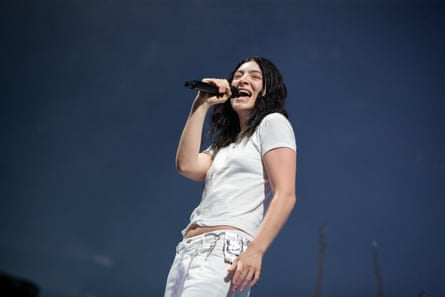
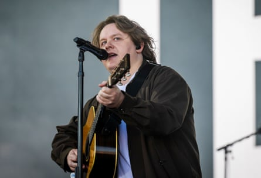
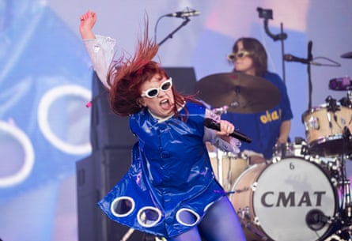
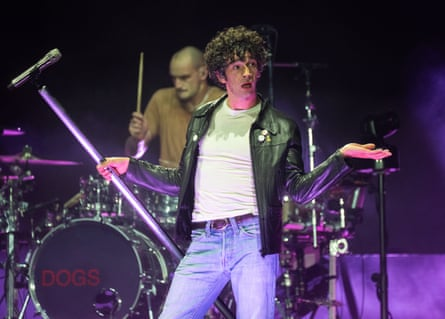
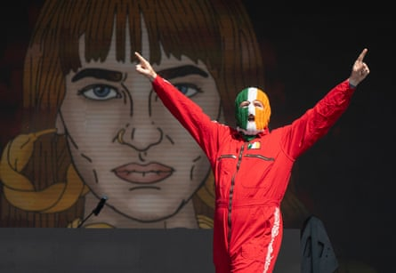
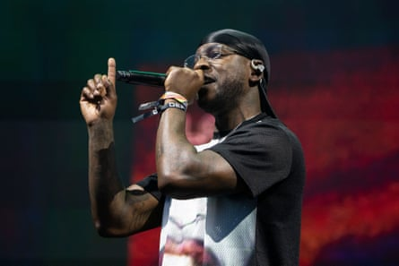
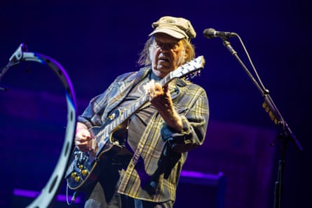

O n Wednesday morning, as Glastonbury opened its gates, the Guardian canvassed the opinions of early arrivals as to which act they were most looking forward to seeing. Several suggested singer-songwriter Lewis Capaldi, who wasn’t listed on the festival’s bill at all. His appearance – a re-entry into public life after two years away, dealing with poor mental health and Tourette syndrome – was meant to be a secret, but everyone already seemed to know when and where he was playing.
Such is the peculiar conceit of the Glastonbury “secret set”: ostensibly a closely guarded surprise, but this year seemingly a matter of public record, only moderately less discussed than the controversial appearance of Belfast rap trio Kneecap, whose set even the prime minister apparently had an opinion . So it was that Lorde’s “secret” set in the Woodsies tent on Friday morning was so oversubscribed that the entire area around it had to be closed off. In fairness, she did her best to thin them out a bit by playing her new album, Virgin, released that morning, in its entirety. It’s a great album – a sharp, intriguingly fraught update of the dancefloor-focused pop style she previously deployed on 2017’s Melodrama – but throwing in only a couple of the hits after nearly 40 minutes of unfamiliar material comes under the heading of A Big Ask at a festival.
Lorde.Photograph: Kieran Frost/Redferns
Later that afternoon, Capaldi’s appearance drew a headliner-sized crowd to the Pyramid stage (“I don’t know who’s been fucking telling people,” he frowned) for a set that was brief, but that couldn’t help being emotionally charged: a chance, as he put it, “to finish what I couldn’t finish last time”. He last played Glastonbury in 2023: it was supposed to be a return to live performance after a string of cancelled shows, but instead his voice gave out, and he subsequently retreated from view. Whatever has happened to him in the intervening two years seems to have had an effect: there were no signs of the dramatic physical tics that beset him during the promotion of his second album, Broken By a Desire to Be Heaven Sent; his voice was restored to its full roaring power. Clearly, there has been no dramatic musical rethink during his time away – a new song, Survive, is clearly inspired by recent events in his life and is slow-paced, soaring chorused business as usual – but then, why would he? Whatever other advances have taken place in pop during his enforced sabbatical, the success of Alex Warren, Benson Boone et al proves there’s still a substantial space for earnest, melancholy young men with acoustic guitars. He ended, inevitably, with Someone You Loved . The crowd, who had been singing along throughout his set, started singing along with a gusto that suggested they were previously just warming up. Capaldi’s eyes brimmed: it would require a very hard heart indeed not to be moved yourself.
Triumphant return … Lewis Capaldi.Photograph: Anthony Devlin/Hogan Media/Shutterstock
Away from the secret sets, the sheer variety of music on offer can still knock even a seasoned Glastonbury-goer back a bit. This is an event at which the same stage can play host, in pretty short order, to teen-pop heroine Gracie Abrams and roots reggae legend Winston Rodney, better known as Burning Spear. He’s now 80 years old, yet still exudes an enviable degree of cool as he reels off his greatest hits in the furnace-like heat. A short walk leads to TikTok-boosted bedroom pop auteur Pink Pantheress – where you get noticeably less chanting down Babylon – but a plethora of short, snappy songs that sound noticeably meatier live, boosted as they are by a band that includes an unexpectedly jazzy trumpet player. From there to singer-songwriter CMAT, whose sound splits the difference between country-rock and mid-70s Fleetwood Mac, and whose Pyramid stage appearance was one of the weekend’s unalloyed triumphs. It was one of those Glastonbury sets that captured an artist at a tipping point in their career, with the distinct sense that they may be on the verge of becoming absolutely huge. It was a sense compounded by the fact that she is clearly an absolutely fantastic pop star: smart, funny, gobbily outspoken, blessed with a potent octave leaping voice and a surfeit of hook-laden songs. She’s also a spectacularly engaging performer, successfully encouraging the audience to engage in synchronised dance moves during I Wanna Be a Cowboy, Baby! , announcing herself as possessed of “middle child syndrome” and “an amazing arse”, ending her set by motioning for the crowd to part, charging into its centre, and delivering the final chorus of Stay For Something in the middle of the audience.
Smart, funny, outspoken … CMAT.Photograph: Anthony Devlin/Hogan Media/Shutterstock
The surprise hit of Friday night turned out to be rapper Busta Rhymes, whose appearance twentysomething years after his commercial peak drew a huge crowd to the Other stage: clearly word had got out about how ridiculously entertaining he and his hypeman, Spliff Star, are live, up to and including unexpectedly dropping Queen’s We Are the Champions and the Pussycat Dolls’ Don’t Cha (“for all the freaky ladies”) mid-set. Meanwhile, the 1975 had clearly gone all-out to turn their Friday night Pyramid stage headlining set into a visually striking event. A plethora of LED screens had been installed around the stage: there was also a kind of moving walkway, along which frontman Matty Healy glided with impressive elan and – for reasons that weren’t entirely clear – the rear half of a car stage-left, from the interior of which Healy performed a song. But as ever with the 1975, all the bells and whistles came with a distinct twist. The stage-side screens not only displayed the songs’ lyrics as Healy sang them, but flashed up critiques of them – “MINDLESS HOLLERING” – and indeed of the 1975 generally: “IS THIS A JOKE?” Meanwhile, between songs, Healy switched from preposterous self-aggrandising – “I’m the greatest songwriter of my generation” – to earnest proclamations about the longstanding friendship at the band’s heart and playing the role of a raddled, tormented pop star, cigarette in one hand, glass of booze in the other.
Asking questions … Matt Healy of the 1975.Photograph: Samir Hussein/WireImage
The danger is that all this meta commentary erects a barrier between the band and the Glastonbury audience, who are perhaps less interested in deconstructing the idea of what it is to be a pop star in the age of social media than they are in singing along. But their set also provided a reminder of how skilled they are at the more prosaic business of songwriting: Love It If We Made It’s parade of millennial angst, the pastel-hued 80s synth-rock of If You’re Too Shy (Let Me Know), the gleaming pop of The Sound, the epic balladry of closer About You. The band ended the show embracing, apparently genuinely emotional: a straightforward conclusion to a bold, experimental, occasionally confounding, but ultimately impressive performance.

Busta Rhymes (right) with Spliff Star.Photograph: Jonny Weeks/The Guardian
Saturday arrived with the Kaiser Chiefs, celebrating the 20th anniversary of their debut album Employment, and country-inflected US singer-songwriter Brandi Carlile , who, as she noted, is substantially better-known back home – where she has been garlanded with Grammy awards and hosts her own festival – than in the UK (her recent collaborative album with Elton John notwithstanding). The crowd that initially assembled was small, but gradually built up, which was testament to the power of her voice and the immediacy of her songwriting: the surging power of The Joke, and You Without Me’s heartbreaking meditation on parenthood.
Kneecap.Photograph: Samir Hussein/WireImage
Regardless of the headliners, the most talked-about Glastonbury appearance this year was that of Kneecap . Quite a lot of the conversation seemed to have been held by people who had evidently never been within a mile of Glastonbury, but the controversy over their comments about Palestine and Conservative MPs was clearly good for business: long before they appeared, the area around the West Holts stage had to be closed to prevent a crush. For now, the trio seem happy to lean into the controversy: their appearance was preceded by a montage of voices condemning the band. Sharon Osbourne featured heavily; Kneecap’s ongoing legal travails were regularly referenced, chants of “fuck the Daily Mail” and “fuck Keir Starmer” jostled for space with “free, free Palestine”. It’s probably too late to say it would be a shame if the furore overshadowed Kneecap’s actual music – far more people now have a virulent opinion about them than have actually heard them – but the point stands: Mo Chara and Móglaí Bap are impressive rappers – raw-throated but dextrous – their sound is a moshpit-inducing stew of drum’n’bass, dubstep and pounding house, decorated with fizzing rave synths. It’s genuinely exciting and feral. In the acres of subsequent coverage generated by their performance, it never gets mentioned.
Stepping up … Skepta.Photograph: Maja Smiejkowska/Shutterstock
Elsewhere, you had to admire the fortitude of rapper Skepta: having already headlined the Other stage on Friday, he reappeared on Saturday, stepping in at short notice for the Deftones, who cancelled due to illness. He was rewarded with an immense audience and a rapturous reception: making the most of his 30 minutes, he packed the brief set with crowd-pleasing hits – That’s Not Me, It Ain’t Safe – while the closing Victory Lap, a freshly released warp-speed collaboration with producer Fred Again, caused something approaching delirium.
“Crowd-pleasing” is not a description much applied to Pyramid stage headliner Neil Young (whose set clashed with Charli xcx ): indeed, he has spent a significant proportion of the last 60 years deliberately short-circuiting his own career whenever it looked as if the crowd might be a little too pleased for his liking. He arrived on stage in a tattered plaid shirt, with a cap pulled so far down it obscured most of his face: at nearly 80, he increasingly looks less like a legendary rock star than an old mechanic from a small American town. At its best, the ensuing set was utterly electrifying, powered by his evident chemistry with new backing band the Chrome Hearts, who spur him into a succession of caustic-sounding extended solos and extended codas comprised exclusively of churning, visceral guitar noise. There were a lot of highlights: fabulously sludgy versions of Fuckin’ Up, Cinnamon Girl and Like a Hurricane; a lovely, lambent acoustic take on Harvest Moon. Equally, there were puzzling moments, most notably an unexpected diversion into 2003’s Sun Green, a song one suspects no one wanted to hear at that precise moment, with the exception of Neil Young: it’s painfully slow, has 18 verses and lasted so long that you started worrying he’d still be there in three weeks’ time, performing it to a barren field and an audience entirely comprised of nonplussed dairy cows.
Uncompromising … Neil Young.Photograph: Jonny Weeks/The Guardian
That said, the encore of Rockin’ in the Free World was euphoric, but anyone after the fabled Glastonbury moment would probably have been better served with the biggest of the non-secret secret shows: Pulp on the Pyramid stage on Saturday evening. The whole performance acted as a reminder of what a singular band they’ve always been – with the benefit of hindsight, their music and lyrics seem so different from those of their Britpop peers, it’s as if they became huge coincidentally, rather than as part of a broader mid-90s movement. It climaxed with Common People: it was hard to judge exactly, but there is a distinct possibility it might have provoked the most vociferous reception of the weekend. As it built to a climax, a noise from above distracted the crowd’s attention. Entirely coincidentally, the Red Arrows staged a flypast: a slightly odd accompaniment to a song about class rage, admittedly, but weirdly impressive nonetheless.